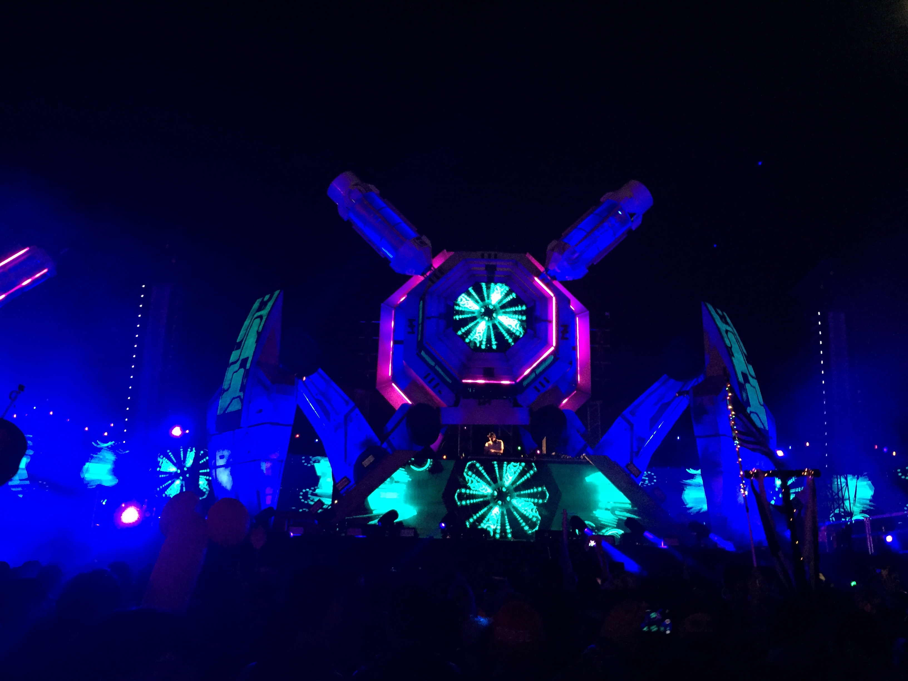

Orange County |
Los Angeles |
Miami
Journey as an artist

Here's an interactive story about my progression as a DJ throughout my 4 years in the United States. I've lived in three different cities, and two coasts; east & west.
The specific cities that I've lived in have had a major influence in my journey.